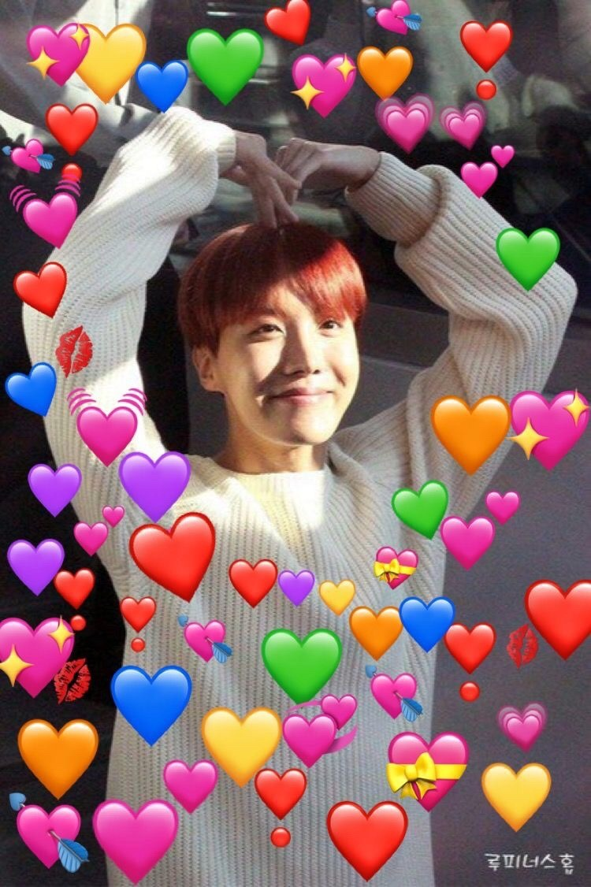

My Portfolio
I've done a number of different things, but I'm mostly going to talk about the Cyber related ones here.
Last summer I participated in the Girls Who Code Summer Immersion Program. It was so much fun! I learned lot about coding websites, and it was great to meet other girls with similar interests. I coded two projects there: a personal website like this one (My Personal Website), and a personality quiz (Book Quiz).
This year I'm participating in the Girls Who Code Self-Paced Summer Program. So far I've made two chat bots (CyHelp Chatbot, and Breach Bot), and this is my third project. After this is making personality quizzes, and an activist website. (Personality Quizzes, Online Safety)
As a part of a team that competed in the 2020-2021 season in Cyberpatriot, we got 3rd place in Georgia. There was a news article about us, and we got an incredible opportunity. (Army Cyber Command salutes local student teams for winning cybersecurity skills) I also competed in the 2019-2020 season, but we didn't do as well then.
This year, I will be competing again with a Civil Air Patrol squadron. I am super excited!!!
Another competition I have competed in, is Cyberstart America (CyberStart America). It is a wonderful program, and has taught me alot over the years. I have competed in it for about 3 years now. I was a National Cyber Scholership Finalist in both 2021 and 2022. I am looking forward to competing this year for the last time.
